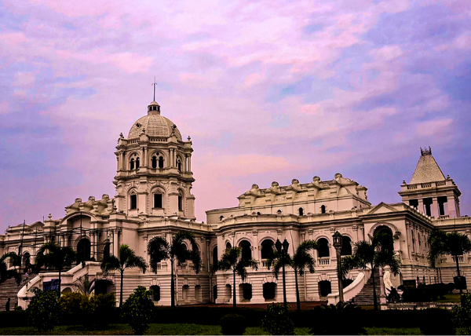

Tripura
"The Land of Hills and Heritage"
Quick Facts
Popular Tourist Attractions
Neermahal
A beautiful water palace built in the middle of Rudrasagar Lake.
Unakoti
Ancient rock carvings and Shaivite sculptures in a picturesque setting.
Jampui Hills
Known for orange orchards and scenic views of sunrise and sunset.
Nature & Wildlife
Tripura’s forests house Sepahijala Wildlife Sanctuary and Trishna Sanctuary, home to diverse species including spectacled monkeys and bison.
Famous Personalities
- Bir Bikram Kishore Manikya: Visionary Maharaja known for modern reforms.
- Pranab Debbarma: Eminent Kokborok scholar and writer.
- Sachin Dev Burman: Legendary music director from Tripura royalty.
Local Handicrafts
Famous for bamboo and cane crafts, tribal jewelry, handwoven textiles, and traditional bamboo hats.
Climate
Moderate and humid climate with monsoon rains, pleasant winters, and warm summers.
Culture & Festivals
Dance
Hojagiri is a famous dance of the Reang tribe performed by balancing acts.
Festivals
Kharchi Puja, Garia Puja, and Durga Puja are celebrated with rituals and tribal traditions.
Food
Tripuri cuisine includes Mui Borok, fish stews, bamboo shoot dishes, and local rice brews.
Attire
Traditional dress includes rignai and risa for women, and rikutu for men in vibrant tribal designs.
Did You Know? Tripura is one of the smallest states in India but has a rich legacy of tribal culture and historical palaces.
Note: Information may be subject to updates. Kindly notify us of any discrepancies.